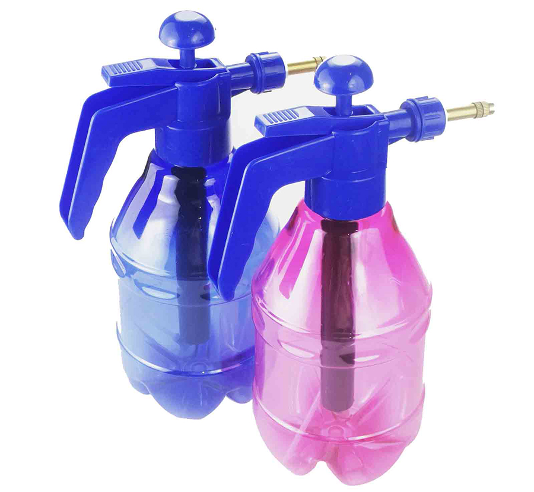
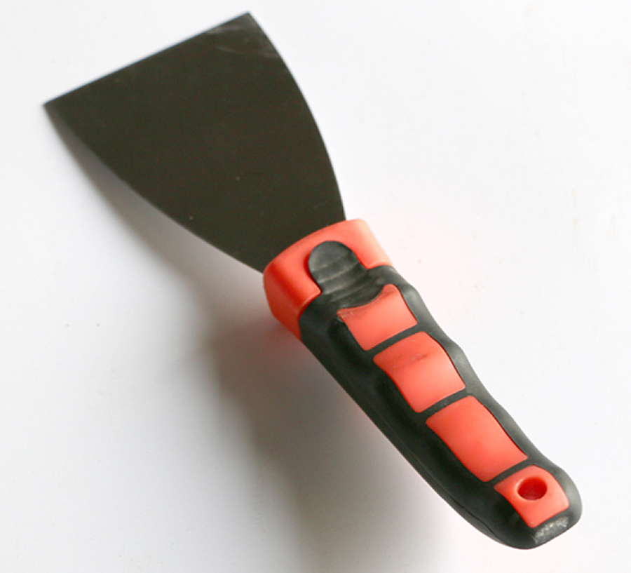
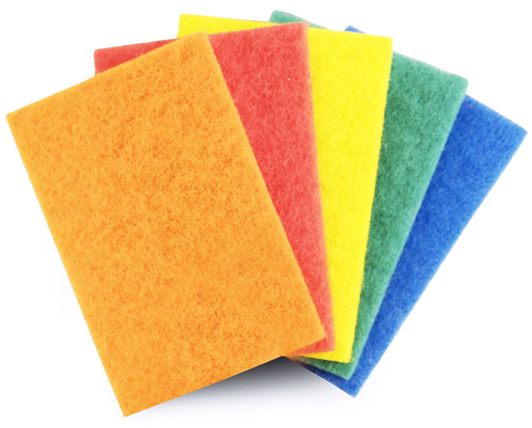
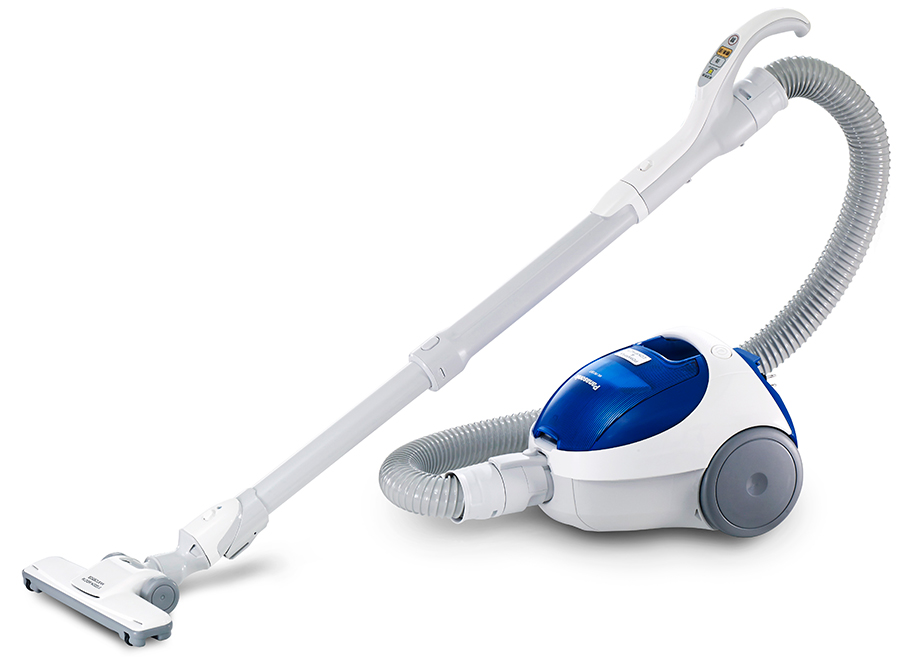
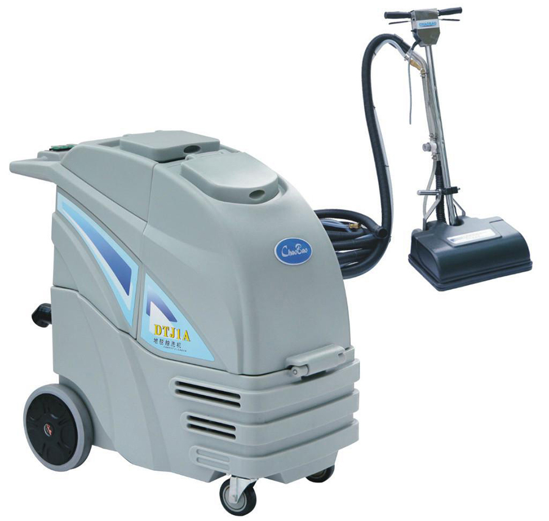
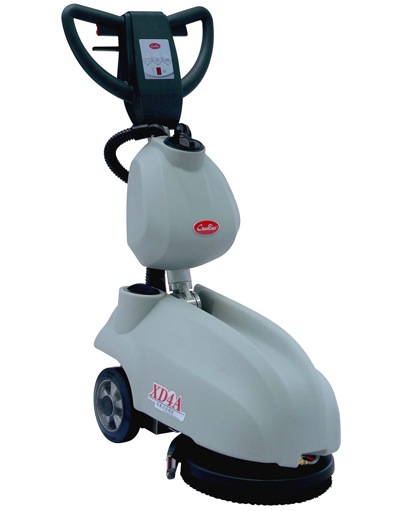
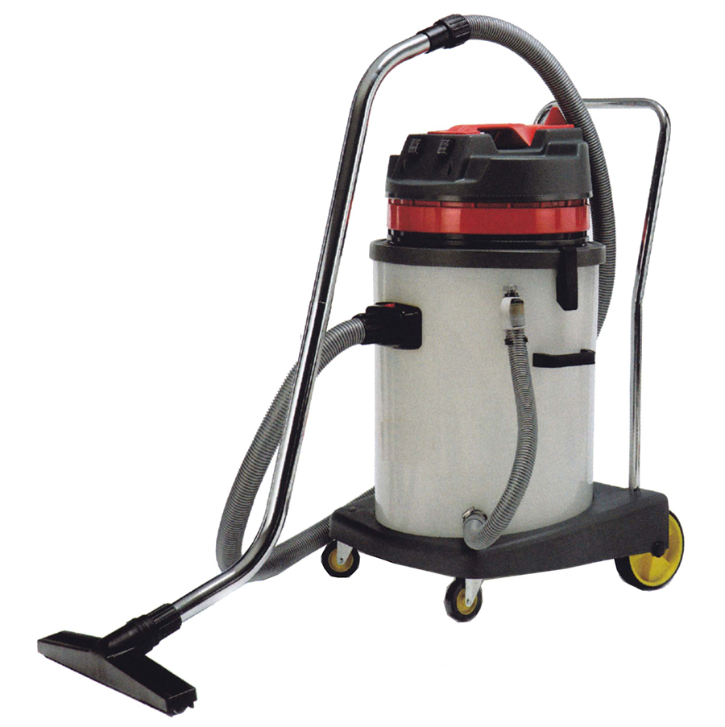
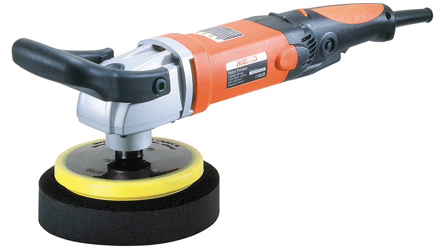
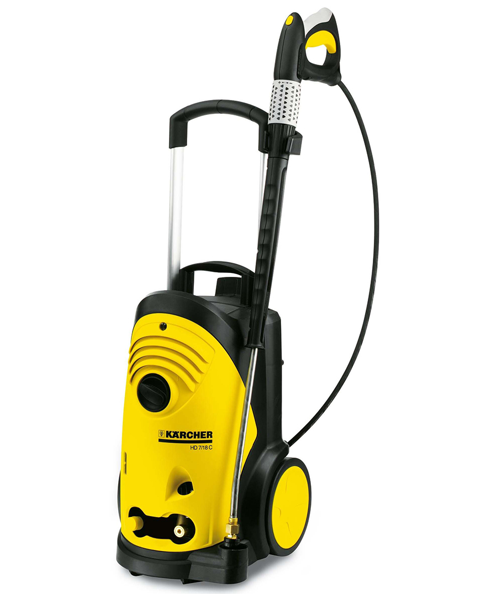
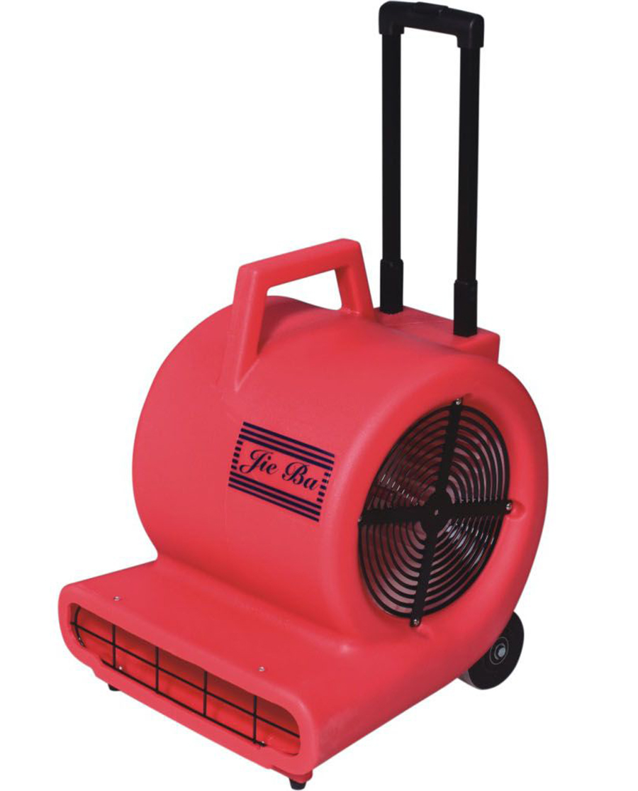

相关知识
客房部使用的清洁用具和设备种类很多，归纳起来分为两大类：清洁器具和清洁剂。在进行清洁保养的过程中，这些器具和化学药品是给客人营造舒适环境的不可或缺的工具。所以对器具和化学药品的正确使用，不仅可以达到高效清洁的效果，而且可以避免由于不当使用而带来的财产损失；同时也能提高个人的工作品质，维护自身的工作安全。
一、清洁器具
（一）一般清洁器具
1．扫帚
2．畚箕
3．拖把
4．玻璃清洁器
5．其他清洁工具
一般清洁用具
（1）喷雾器

喷雾器
（2）油灰刀（刮刀）
油灰刀用于去除粘固在地板上的口香糖等难以清洁的污垢。

油灰刀
（3）百洁布
百洁布有粗、细两种，清洁卫生间洁具很有效果。除了上面介绍的几种外，其他我们常用的清洁用具还有：抹布、鸡毛掸子、丝瓜布、铝丝绒等。

百洁布
（二）机器清洁设备
1．吸尘器
吸尘器应用范围很广，地板、家具、帘帐、垫套和地毯等均可以用其清洁。

吸尘器
（1）吸尘器的结构
它主要有主体和附件两部分构成。主体包括电动机、风机和吸尘部分（由过虑器、储尘桶组成）；附件包括软管、接头弯管、塑接管（接长管）、刷头和扁吸嘴等。
（2）吸尘器的种类
按照操作原理及构造，吸尘器大致可分为三类：直立式、吸力式和混合式。直立式吸尘器在地毯上操作非常简单，使用者不用弯腰曲背，但它的吸嘴通常较大，所以在清洁“矮脚”家具底下或其他潜窄的地方时，就不如圆筒形吸尘器方便。此外，直立式吸尘器在操作时发出的噪声比吸力式的大。吸力式吸尘器有多种款式，如圆筒形、长筒形。虽然外形设计存在一定差别，但它们都有一个共同之处，那就是都有一个长喉管，用来接交各种配件，以配合不同的工作需要。由于这类吸尘器只是靠吸力去吸尘，所以它的发动机功率通常比较大。在清洁方面由于没有电动旋转刷，对清理地毯的效力不是很显著。但由于它具备强劲的吸力，对清理地板、家具、帘帐等效果较好，也可较方便地清理。
“矮脚”家具底下或其他浅窄的地方。混合式吸尘器外形与吸力式大致相同，多采用圆筒式的设计。它除了具有强劲的吸力外，还备有电动的振动清洁刷，可随时装上使用，因此在清洁效能方面可以同时发挥直立式吸尘器和吸力式吸尘器两者的长处。
（3）吸尘器地使用
①使用前必须检查电线有无破损，插头有无破裂或松脱，以免引起触电事故。
②检查吸尘器头有无隔尘网片，机身耳钩是否损坏或丢失。
③拉吸尘器时要一手抓吸尘器吸管，另一手拉吸尘器的把手，这样可方便拉动，避免碰撞其他物体。
④检查吸把转动是否灵活，发现有问题时要报告维修部检修，以免损坏把头和底部铁盒。
⑤吸尘器堵塞时，不要继续使用，以免增加吸尘器的负荷，烧坏电动机。
⑥发现地毯上有大件物和尖硬物体时要捡起来，如果硬用吸尘器吸会损坏内部机件或造成吸管堵塞。
⑦吸尘后要检查吸尘器地轮子是否缠绕上杂物，若有要及时清理并加油。
⑧吸尘器每天使用完毕后，必须清理集尘袋，擦干净机身，将机头与机身分拆摆放好。
2．洗地毯机

洗地毯机
（1）洗地毯机简介
洗地毯机工作效率高，省力、省时、节电、节水。机身结构及配件用塑料玻璃钢和不锈钢制成。可用于清洗纯羊毛、化纤、尼龙、植物纤维等地毯。洗地毯机主要有两个吸力泵、污水箱、净水箱、强力喷射水泵、电动机等构成，采用真空抽吸原理。洗地毯机在操作时，强力喷射、振荡刷洗、真空抽吸三个动作同时进行。
（2）洗地毯机的使用（地毯干泡清洗操作规程为例）
②用地毯除渍剂清除地毯上的各类污迹及口香糖等污迹。
⑦操作机械在地毯上来回刷 3～4 次，上下行箕距互叠 10cm。
3．洗地机

洗地机
（1）洗地机简介
洗地机又称擦地吸水机，它具有擦洗机和吸水机的功能，可将擦洗地面的工作一步完成，适用于对饭店地大厅、走廊、停车场等面积大的地方的清洗，是提高饭店清洁卫生水平不可缺少的工具之一。
（2）洗地机的使用
②当打开吸水机开关时，应注意查看污水箱是否保持密封，以防污水外溢。
③清洗工作完毕，将吸水系统剩余清洁液抽至污水箱内，便于倾倒。
④每次使用后，应把各种配件清洗干净，晾干后妥善保存起来。
4．吸水机
吸水机外形常用的有筒形和车厢形两种，机身由塑料或不锈钢材料制成，分为固定型和活动型两种。吸水机主要部件是真空泵、蓄水桶和吸水刷。吸水机的功能是：对洗刷后地毯进行抽吸，使残存于地毯中的污物彻底清除。它的使用方法和吸尘器的使用方法基本相同，接通电源即可操作，蓄水桶吸满后要及时放掉。

吸水机
5．打蜡机
又称打光机。主要用于地板及光整地面上蜡后打光。打蜡机以电动机为动力，经变速机带动刷盘旋转，将上蜡地面打光。有单刷机、双刷机、三刷机和上蜡打光机 4 种。单刷机使用最广。单刷机的速度有慢速、中速、高速和超高速。慢速及中速较适合于洗擦地板，高速则适用于花岗石、大理石等平整硬质地面的抛光。

打蜡机
6．高压冲洗机
用于外墙、广场、地面、汽车和垃圾房、停车场和其他需要高压冲洗的地方。

高压冲洗机
7．吹干机
适用于清洗后的地毯、起蜡后的硬质地面，除了上述各类机器设备外，各个饭店根据自己的规模、承受能力等条件配备不同的清洁机器。

吹干机
二、清洁剂
在进行清洁保养过程中清洁剂是必不可少的工具之一。因为它的使用可以得到如下效果。
（3）防止物件因受热、受潮、受化学污染或摩擦而遭受损坏。
（5）美化物品的外观等。但是清洁剂一般都是些化学药品，如果对这些化学药品缺乏一定的认知，进行不当使用，则会对使用者和使用对象产生严重后果。
（一）清洁剂的种类
一般清洁剂包括三种类型：酸性清洁剂、中性清洁剂、碱性清洁剂。清洁剂的化学性质通常用 pH 值来表示。
1．酸性清洁剂
2．中性清洁剂
3．碱性清洁剂
（二）常用清洁剂介绍
1．万能清洁剂
是一种中性清洁剂，在使用过程中如加入沐浴露可以增加润滑作用和芳香味道。调和使用可用于浴室脸盆、马桶、浴缸等的清洗，以去除附在浴缸、墙壁上的油脂、水垢及肥皂残余物等。
2．玻璃清洁剂
用以清理玻璃、镜子的污渍灰尘；也可加入酒精以增加挥发性，使用后洁净明亮并可防止灰尘吸附。
3．地毯清洁剂
（1）用于地毯清洗或局部污渍清理，依地毯材质及脏污程度选用各种类别的药剂，可使地毯颜色亮丽、洁净芳香。
（2）再依地毯污渍的程度可稀释 10 至 20 倍使用，并于清洗地毯前用吸尘器先吸干净，地毯干后再吸尘一次才能使用。
4．除锈水
5．酒精
可用于电话机消毒和清理轻微黏胶，但必须是药用酒精。而且应避免触及木器油漆以免造成泛白痕迹；擦拭印刷品也会造成字迹褪色。
6．瓷洁
用于马桶、瓷砖等污垢的清理，要避免触及不锈钢物品或花岗石地板。
7．去油能（化油剂）
用于清洗一般污渍、油渍，若大面积时可与万能清洁剂掺合使用。
8．漂白水
瓷砖缝、浴帘等发霉漂白用；茶杯、茶壶、盘子、洗脸盆水塞等漂白用；水杯的清洁杀菌用。在清理过程中应避免溅到衣物或眼睛，若沾到不锈钢应立即冲水。但漂白水禁止与瓷洁混合使用，以防产生气爆。
9．三合一清洁剂
属于中性清洁剂，一般不会造成损坏，可用于清理黏胶、纤维质污点以及粘在地毯上的口香糖，效果良好。
10．碧丽珠
用以打蜡磨亮家具，倒在专用抹布上，均匀涂抹家具后用力擦亮，但避免用量过多，会造成湿黏；房门等木器不宜上蜡，以防发霉。
11．铜油
用以擦亮铜器用品，均匀涂抹后用力擦亮；镀铜用品不可使用，以免破坏保护膜。
12．香蕉水
油漆之调和剂，可用于黏胶之清理及玻璃、镜面污渍清理。但不得擦拭塑胶、家具、压克力等制品，那会造成表面腐蚀之现象。
13．地毯芳香剂
用以清除地毯霉味，增加芳香，倒在专用抹布上，均匀涂抹后擦亮，但避免用亮过多，会造成湿黏。